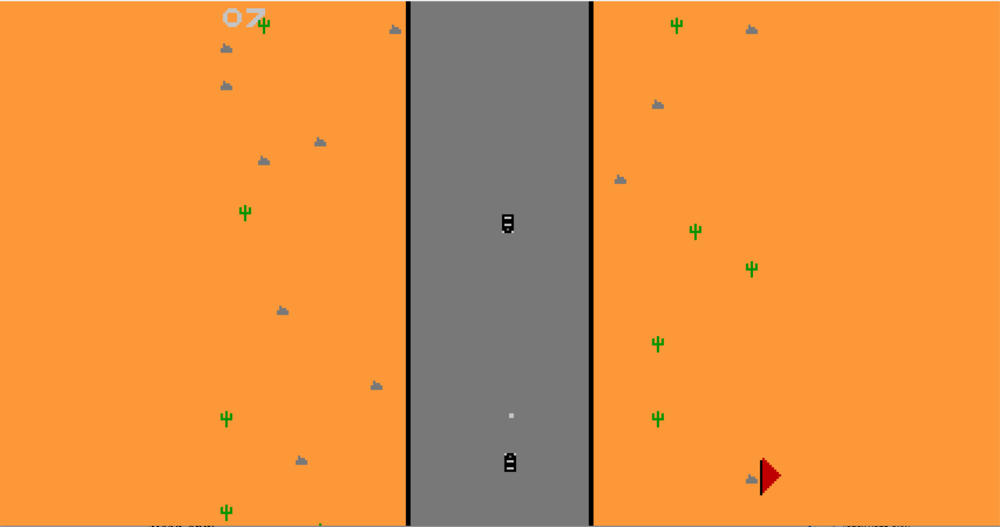

MaxMadNes - 6502 ASM NES Project
MaxMadNes is a top down shooter that I made for the NES using 6502 Assembly which was then compiled with NESASM which allowed it to be played on a emulator to make it easier to test and debug. The game is a "demake" of Mad Max (2015), where in it retains the core elements of driving and shooting, however the gameplay has been massively simplified so that it is able to work on NES.
The game features screen scrolling to make the game both more visually appealing and add a more technical aspect as this effect was quite hard to achieve. It was done by having two different backgrounds stored in memory and then they were switched between whenever they rolled by, and although that sounds quite simple it's quite hard to get working due to all of the manual memory management that is required when working with 6502. The game also features full 8 way movement, shooting, full collision detection, and scoring so that the player can keep track of how well they are doing, and make it a more competitive game as scores can then be compared between friends, meaning player's are more likely to return to the game.
Creating this game brought with it many unique challenges that built up my skills as a programmer, such as learning to work with a constrained language due to the lack of memory available, and adapting to the low level language that ASM is, as I had never had any experience working with anything like this before. All of these challenges definitely improved my skills and made me a more valuable developer as having knowledge of low level programming is important when understand programming processes, and the constrained workspace made me think much more about optimising my work for the platform that I am developing for.
The ROM for my game can be found in my GitHub Repo for the game here I highly recommend giving it a spin to explore the features, I have also left the ASM file up so that you can take a peak at my code. The Trello board for my project can be found here